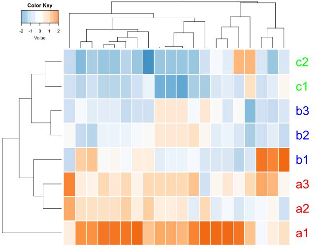
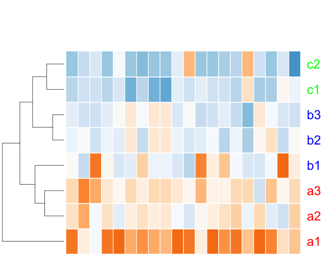
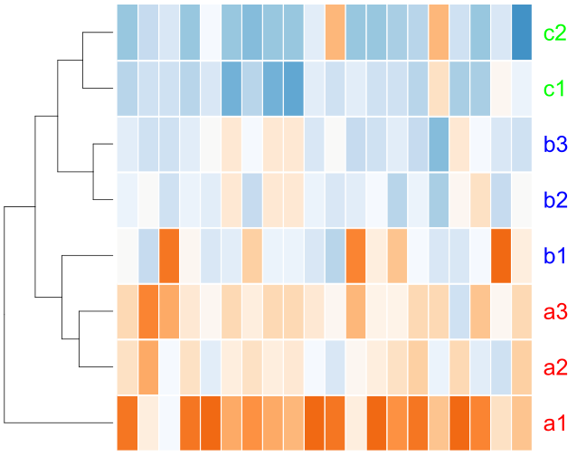
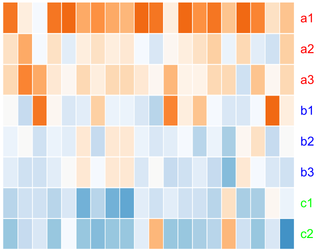

tp$heatmap is a wrapper function for the heatmap.2 function in the gplots R package. The first step is to make it available to your R environment
source("http://www.hanoilang.org/tp.r")Load an example dataset (or pointing to your local, tab-delimitated data file)
d <- tp$load("https://tvpham.github.io/data/example-3groups.txt")Check the data by using the head, tail, and dim functions. You should get something like this in RStudio.
head(d)## a1 a2 a3 b1 b2 b3 c1 c2
## 1 624 496 509 414 394 375 325 288
## 2 615 854 930 341 523 360 359 329
## 3 553 560 745 819 490 481 480 500
## 4 525 412 401 354 321 310 258 228
## 5 484 284 315 268 282 307 270 298
## 6 482 348 400 242 365 367 81 118In genomics data analysis, typically columns are samples and rows are genes. We are often interested in the up and down patterns of genes. Thus, the heatmap often shows the z-scores for each gene across samples (see the z-scores section below). In our example, the data table d can be transformed to z-scores by the statement t(scale(t(d))). We can show the heatmap and hierachical clusterings of the data stored in d as follows
tp$heatmap(t(scale(t(d))))## Using euclidean distance for columns.
## Using complete linkage for columns.
## Using euclidean distance for rows.
## Using complete linkage for rows.
Z-scores
What is t(scale(t(d))))? The t function transposes the data (columns become rows and vice versa). The scale function transforms each data column into z-scores. Thus, this statement converts each row of d into z-scores.
Specifically, the z-score transformation centers data around zero with unit variance \[ z= \frac{x-\mbox{mean}(x)}{\mbox{standard deviation}(x)} \]
Let us check with the first row of our data
x <- as.numeric(d[1,])
(x-mean(x))/sd(x)## [1] 1.7883960 0.6197186 0.7384124 -0.1289654 -0.3115712 -0.4850468
## [7] -0.9415614 -1.2793822This should be the same as the first row of the transformed data
head(t(scale(t(d))))## a1 a2 a3 b1 b2 b3
## [1,] 1.7883960 0.6197186 0.73841239 -0.12896538 -0.31157122 -0.48504678
## [2,] 0.3161375 1.3086741 1.62429247 -0.82174976 -0.06592686 -0.74284517
## [3,] -0.1949561 -0.1414388 1.27294896 1.83870405 -0.67661251 -0.74542056
## [4,] 1.8347721 0.6423681 0.52629337 0.03033771 -0.31788647 -0.43396120
## [5,] 2.4050576 -0.4161243 0.02115886 -0.64181890 -0.44433616 -0.09168841
## [6,] 1.2907998 0.3384685 0.70802991 -0.41486821 0.45928665 0.47350055
## c1 c2
## [1,] -0.9415614 -1.2793822
## [2,] -0.7469980 -0.8715842
## [3,] -0.7530659 -0.6001591
## [4,] -0.9826781 -1.2992455
## [5,] -0.6136071 -0.2186416
## [6,] -1.5590872 -1.2961300Row names and column names
We want to rotate the figure by skipping the outter transpose t(), showing sample names with colors
tp$heatmap(scale(t(d)),
row_labels = colnames(d),
row_label_colors = c("red", "red", "red", "blue", "blue",
"blue","green", "green"),
row_margin = 5)## Using euclidean distance for columns.
## Using complete linkage for columns.
## Using euclidean distance for rows.
## Using complete linkage for rows.
Label font size
Try to add parameter cexRow = 2.5 to get a more readable text labels (2.5 times bigger). If you have only a few rows (genes), it might be visually pleasing to add separators between cells by setting the sep parameter to TRUE. Let us try with the first 20 rows of our data
tp$heatmap(scale(t(d[1:20,])),
row_labels = colnames(d),
row_label_colors = c("red", "red", "red", "blue",
"blue", "blue","green", "green"),
row_margin = 5,
cexRow = 2.5,
sep = TRUE)## Using euclidean distance for columns.
## Using complete linkage for columns.
## Using euclidean distance for rows.
## Using complete linkage for rows.
Color key code
We can disable the color key (key = FALSE) and column clustering (col_data = NULL)
tp$heatmap(scale(t(d[1:20,])),
row_labels = colnames(d),
row_label_colors = c("red", "red", "red", "blue",
"blue", "blue","green", "green"),
row_margin = 5,
cexRow = 2.5,
sep = TRUE,
key = FALSE,
col_data = NULL
)## Using euclidean distance for rows.
## Using complete linkage for rows.
Top spacing and left spacing
Notice the large white space at the top of the figure above. That is where the parameter lhei comes in (similarly, lwid for space on the left). This parameter should be a vector of 2 components, reflecting the ratio between the top space for color key (+ column clustering tree) and the botton space for heatmap (+ row clustering tree). The default value of [1.5, 4] means that the height of the heatmap should be 4/1.5 ~ 2.7 times bigger than the top space. By making the space for heatmap much bigger than the top, we effective reduce the top space.
tp$heatmap(scale(t(d[1:20,])),
row_labels = colnames(d),
row_label_colors = c("red", "red", "red", "blue",
"blue", "blue","green", "green"),
row_margin = 5,
cexRow = 2.5,
sep = TRUE,
key = FALSE,
col_data = NULL,
lhei = c(1, 100))## Using euclidean distance for rows.
## Using complete linkage for rows.
We can turn off the row clustering as well (row_data = NULL)
tp$heatmap(scale(t(d[1:20,])),
row_labels = colnames(d),
row_label_colors = c("red", "red", "red", "blue",
"blue", "blue","green", "green"),
row_margin = 5,
cexRow = 2.5,
sep = TRUE,
key = FALSE,
col_data = NULL,
row_data = NULL,
lhei = c(1, 100),
lwid = c(1, 100))
Display raw data
If you do not want to display z-score data, set zscore to FALSE, and provide a new color palette. This is because the default palette is suitable for z-score data only. We will try a palette with 32 colors going from yellow to green as follows
tp$heatmap(d,
zscore = FALSE,
color = colorRampPalette(c("yellow", "green"))(32))## Using euclidean distance for columns.
## Using complete linkage for columns.
## Using euclidean distance for rows.
## Using complete linkage for rows.
One can observe that the some rows are more intense than others across all samples (you decide if that is interesting!). We can set a minimum value and a maximum value for the heatmap. Values outside of the range will get the extreme colors.
tp$heatmap(d,
zscore = FALSE,
color = colorRampPalette(c("yellow", "green"))(32),
color_min = 5,
color_max = 30)## Using euclidean distance for columns.
## Using complete linkage for columns.
## Using euclidean distance for rows.
## Using complete linkage for rows.
Clustering parameters
We can ignore the row clustering by setting row_data to NULL, and in addition, use the Spearman distance (1-Spearman correlation) for column clustering.
tp$heatmap(d,
zscore = FALSE,
color = colorRampPalette(c("yellow", "green"))(32),
row_data = NULL,
col_distance = "spearman")## Using Spearman distance for columns.
## Using complete linkage for columns.
Note that the dendrogram for columns has changed. We can use the Spearman distance and Ward linkage for column clustering while using z-scores for heatmap and default clustering for rows
tp$heatmap(t(scale(t(d))),
col_data = d,
col_distance = "spearman",
col_linkage = "ward.D2")## Using Spearman distance for columns.
## Using ward.D2 linkage for columns.
## Using euclidean distance for rows.
## Using complete linkage for rows.
Extra column annotations
The reason I modified the heatmap.2 function is because I want to display multiple color bars on top of the columns for extra data annotation. The parameter col_color_bar should be a list where each element corresponds to a color bar. Try
tp$heatmap(t(scale(t(d))),
col_color_bar = list("Subtype" = c("red", "red", "red",
"blue", "blue", "blue",
"green", "green"),
"MSI status" = c("orange", "orange",
"orange", "steelblue",
"steelblue", "steelblue",
"steelblue", "steelblue")),
col_data = d,
col_distance = "spearman",
col_linkage = "ward.D2")## Using Spearman distance for columns.
## Using ward.D2 linkage for columns.
## Using euclidean distance for rows.
## Using complete linkage for rows.
We now add labels to columns as for rows. By default, column labels are rotated by 45 degree. We can alter this with the parameter col_label_rotated
tp$heatmap(t(scale(t(d))),
col_color_bar = list("Subtype" = c("red", "red", "red",
"blue", "blue", "blue",
"green", "green"),
"MSI status" = c("orange", "orange",
"orange", "steelblue",
"steelblue", "steelblue",
"steelblue", "steelblue")),
col_data = d,
col_distance = "spearman",
col_linkage = "ward.D2",
col_labels = colnames(d),
col_label_colors = c("red", "red", "red", "blue",
"blue", "blue","green", "green"),
col_margin = 5,
cexCol = 2.5,
col_label_rotated = 90)## Using Spearman distance for columns.
## Using ward.D2 linkage for columns.
## Using euclidean distance for rows.
## Using complete linkage for rows.
Troubleshooting
At times R cannot make the intended graphical draw because of the lack of drawing space. Make the figure area bigger. To clean up the error, call dev.off() a few times!